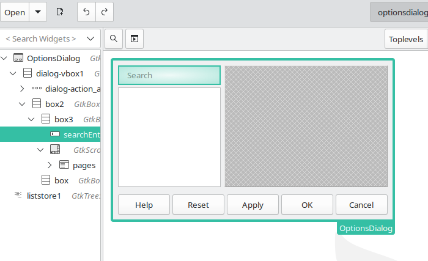

Week #1 - GSoC 2023 Weekly Report - Search Field in Options
Thanks to my ‘Search Field in Options’ project mentors Andreas Heinisch and Heiko Tietze for their time and guidance.
***
Current progress for week #1
-
First patchset has been submitted: https://gerrit.libreoffice.org/c/core/+/152519
-
Search bar/field added to “Tools > Options” dialog
cui/uiconfig/ui/optionsdialog.ui:

“Tools > Options” dialog:
- Search functionality implemented for Options TreeView. (in “Tools > Options”)

- Some technical details
There is a timer that waits the user to stop typing if user types faster than 350ms. Since searching can be expensive, we shouldn’t perform search for every key press if pressing between two keys are less than 350ms, which will improve the performance.
IMPL_LINK_NOARG(OfaTreeOptionsDialog, SearchUpdateHdl, weld::Entry&, void)
{
m_aUpdateDataTimer.Start();
// debug ("timer -> SearchUpdateHdl()");
}ImplUpdateDataHdl() is called for searching:
IMPL_LINK_NOARG(OfaTreeOptionsDialog, ImplUpdateDataHdl, Timer*, void)
{
// Pause redraw (Do not redraw at each removal
xTreeLB->freeze();
// Apply the search filter to the functions list
OUString aSearchTerm(m_xSearchEdit->get_text());
int nMatchFound = applySearchFilter(aSearchTerm);
// debug ("nMatchFound: " << nMatchFound);
// Resume redraw
xTreeLB->thaw();
if (nMatchFound != -1)
{
xTreeLB->select(nMatchFound);
}
else
{
}
}applySearchFilter(aSearchTerm) function gets the word in search bar and does the search:
int OfaTreeOptionsDialog::applySearchFilter(OUString const& rSearchTerm)
{
// debug ("applySearchFilter(), rSearchTerm text: " << rSearchTerm);
if (rSearchTerm.isEmpty())
{
ClearAllOptions();
xTreeLB->clear();
Initialize(m_xFrame);
return 0;
}
m_options.searchString = rSearchTerm;
utl::TextSearch textSearch(m_options);
ClearAllOptions();
if (xTreeLB->n_children() > 0)
{
xTreeLB->clear();
}
for (std::size_t i = 0; i < aDialogIdVector.size(); ++i)
{
int nEntry = i;
OUString aStr = aDialogIdVector[nEntry].first;
sal_uInt16 aId = aDialogIdVector[nEntry].second;
// debug ("aDialogIdVector["<< nEntry << "]: " << aStr << " : " << aId);
sal_Int32 aStartPos = 0;
sal_Int32 aEndPos = aStr.getLength();
// make search
if (!textSearch.SearchForward(aStr, &aStartPos, &aEndPos))
{
// debug ("not found: " << aStr << " : " << aId);
}
else
{
// debug ("found: " << aStr << " : " << aId);
// TODO: convert allDialogIds vector to a pair to hold function pointers.
// -> (allDialogIds[i].second)();
switch(aId)
{
case SID_GENERAL_OPTIONS:
generalOptions();
break;
case SID_FILTER_DLG:
loadAndSaveOptions();
break;
case SID_LANGUAGE_OPTIONS:
languageOptions();
break;
case SID_SW_EDITOPTIONS:
writerOptions();
break;
case SID_SW_ONLINEOPTIONS:
writerWebOptions();
break;
case SID_SC_EDITOPTIONS:
calcOptions();
break;
case SID_SD_EDITOPTIONS:
impressOptions();
break;
case SID_SD_GRAPHIC_OPTIONS:
drawOptions();
break;
case SID_SM_EDITOPTIONS:
mathOptions();
break;
case SID_SB_STARBASEOPTIONS:
databaseOptions();
break;
case SID_SCH_EDITOPTIONS:
chartOptions();
break;
case SID_INET_DLG:
internetOptions();
break;
default:
break;
}
}
}
// if treeview is empty, return -1
return xTreeLB->n_children() ? 0 : -1;
}Summary
- First patchset has been submitted: https://gerrit.libreoffice.org/c/core/+/152519
- Search bar/field added to “Tools > Options” dialog.
- Search functionality implemented to Options treeview.
***
Steps for implementing search functionality in “Tools > Options”:
| 1) Add Search field to “Tools > Options” dialog. | DONE - week #1 |
| 2) Options treeview. | DONE - week #1 |
| 3) Sub-tree elements (child nodes). | Next step |
| 4) Strings(labels) in all dialogs. | ... |
| 5) Tooltip texts. | ... |
| 6) Accessible descriptions. | ... |
| ... | ... |
Additional hack:
- show modified options with some special indicator (as in KDE settings). (better to discuss this idea in a separate ticket)
***
Patch: https://gerrit.libreoffice.org/c/core/+/152519
Project Mentors: Andreas Heinisch and Heiko Tietze (Thanks for their time and guidance)
GSoC project page: https://summerofcode.withgoogle.com/programs/2023/projects/IKtSHIH1
Enhancement request on Bugzilla: https://bugs.documentfoundation.org/show_bug.cgi?id=49895